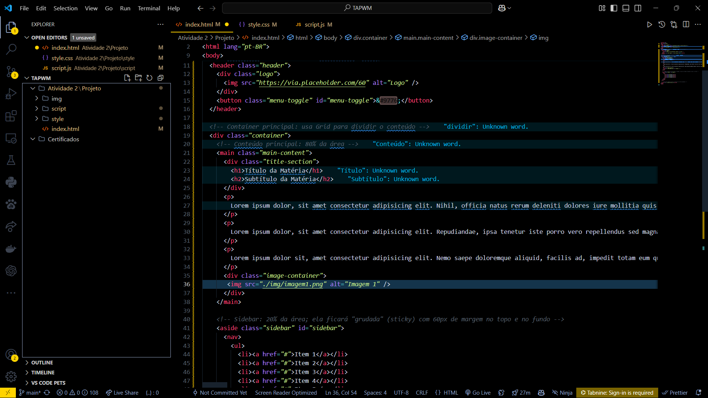

A Inteligência Artificial (IA) tem sido uma das tecnologias mais revolucionárias do século XXI, impactando diversas áreas, como saúde, indústria, educação e entretenimento. Com avanços significativos, a IA permite a automação de tarefas complexas, melhorando a eficiência e a tomada de decisões. No entanto, seu desenvolvimento também levanta questões éticas e desafios que precisam ser debatidos.
O Impacto da Inteligência Artificial no Mundo Moderno
Inteligência Artificial – Conceitos, Aplicações e Desafios Éticos
Conceitos de Inteligência Artificial
Machine Learn, Neural Networks e PLN
A Inteligência Artificial é um campo da ciência da computação que busca criar sistemas capazes de executar tarefas que normalmente exigiriam inteligência humana. Alguns dos principais conceitos incluem:
Aprendizado de Máquina (Machine Learning)
O aprendizado de máquina é uma subárea da IA que permite aos sistemas aprenderem e melhorarem com a experiência sem serem explicitamente programados. Ele se divide em três categorias principais: Supervisionado: Utiliza dados rotulados para treinar modelos, permitindo previsões mais precisas com base em padrões já conhecidos. Esse método é amplamente utilizado em diagnósticos médicos, reconhecimento facial e detecção de fraudes financeiras. Não supervisionado: Identifica padrões ocultos em grandes volumes de dados sem a necessidade de rótulos. Isso é útil em análises de mercado, segmentação de clientes e identificação de anomalias. Por reforço: Baseia-se em tentativa e erro, onde o sistema recebe recompensas por ações corretas e penalizações por decisões erradas. Esse método tem sido utilizado em robótica, jogos e otimização de processos industriais.
Redes Neurais Artificiais
Inspiradas no funcionamento do cérebro humano, as redes neurais artificiais são compostas por camadas de neurônios interconectados. Elas são amplamente utilizadas em diversas aplicações, como: Reconhecimento de Imagens: Usadas para análise de radiografias, segurança biométrica e veículos autônomos. Processamento de Linguagem Natural: Interpretam textos e falas humanas para criar assistentes virtuais mais inteligentes. Previsão de Tendências: Aplicadas em mercados financeiros para análise de ações e em estudos climáticos para previsão meteorológica.
Processamento de Linguagem Natural (PLN)
O PLN permite que máquinas compreendam, interpretem e gerem linguagem humana. Entre suas aplicações mais notáveis estão: Assistentes Virtuais: Como Siri, Alexa e Google Assistant, que interagem com usuários de maneira natural. Tradução Automática: Serviços como o Google Tradutor facilitam a comunicação entre diferentes idiomas. Análise de Sentimento: Utilizada em redes sociais e atendimento ao cliente para interpretar emoções em textos e interações.

Exemplos de Aplicação da IA
Em diferentes setores e industrias
A Inteligência Artificial já está presente em diversas áreas do cotidiano
Saúde
Diagnóstico Preciso: Algoritmos analisam exames médicos para identificar doenças como câncer e Alzheimer em estágios iniciais. Cirurgias Assistidas: Robôs cirúrgicos ajudam médicos a realizarem procedimentos com maior precisão e menos invasão. Monitoramento de Pacientes: Dispositivos vestíveis coletam dados de saúde e alertam sobre possíveis complicações.
Industia e automação
Robôs Industriais: Equipamentos automatizados realizam montagens complexas, aumentando a produtividade e reduzindo erros. Manutenção Preditiva: Sensores inteligentes detectam falhas antes que ocorram, evitando paradas inesperadas em fábricas. Gestão de Estoques: IA otimiza cadeias de suprimentos e previsão de demanda, reduzindo desperdícios.
Educação
Tutoriais Interativos: Chatbots educacionais auxiliam estudantes em dúvidas e revisões de conteúdos. Plataformas de Ensino Adaptativo: Sistemas ajustam conteúdos conforme o ritmo de aprendizado dos alunos. Correção Automática: Inteligência artificial avalia redações e atividades, fornecendo feedback imediato. Tutoriais Interativos: Chatbots educacionais auxiliam estudantes em dúvidas e revisões de conteúdos.
Entretenimento
Recomendações Personalizadas: Algoritmos sugerem filmes, músicas e conteúdos com base nos interesses dos usuários. Criação de Conteúdo: IA gera textos, imagens e músicas, ampliando possibilidades criativas. Realidade Aumentada: Jogos e aplicativos utilizam IA para criar experiências imersivas.